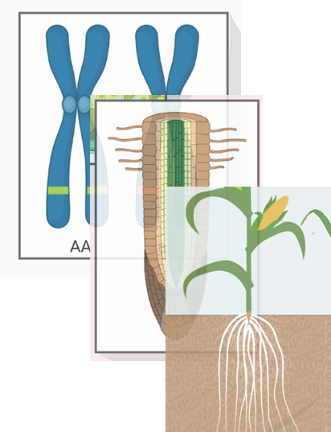

Local Adaptation
We analyze how crops adapt to soil, temperature, and rainfall conditions to develop region-specific varieties.

This space will display the research description for Local Adaptation. Replace this paragraph with full content later.